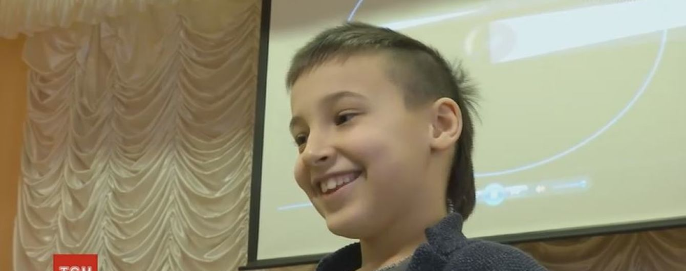
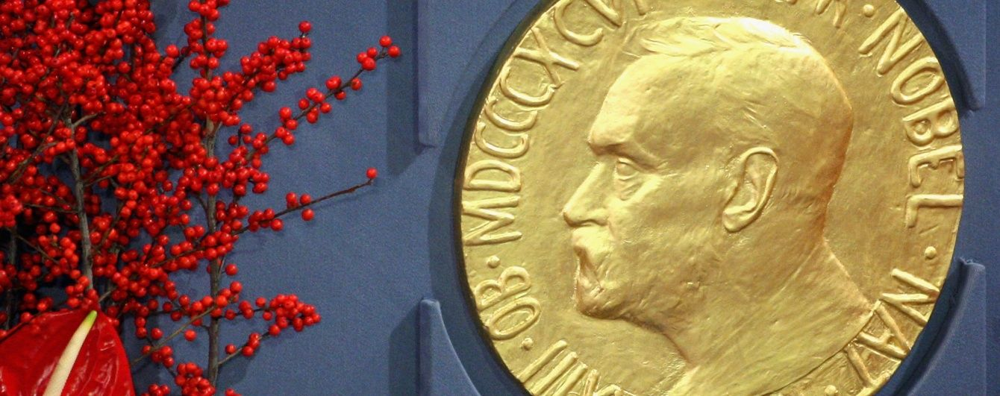
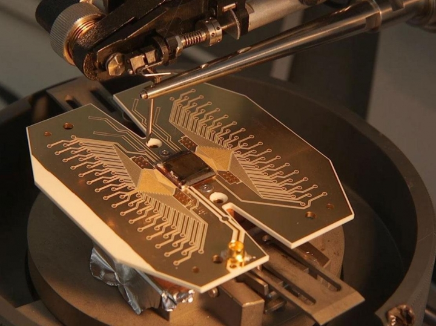

дослідження
науковці
великі відкриття
адронний колайдер
атом
кванти
Кварки
Лептони
Бозони
матерія
матерія
антиматерія
що таке енергія
фундаментальні взаємодії
класична фізика
інше
новини

16-02-2018
8-РІЧНИЙ ХАРКІВ’ЯНИН ПОСТАВИВ РЕКОРД ЗІ ЗНАННЯ ТЕРМІНІВ КВАНТОВОЇ ФІЗИКИ

09-10-2017
КЛІТИННИЙ ГОДИННИК, ГРАВІТАЦІЙНІ ХВИЛІ ТА ЕМОЦІЙНА ЛІТЕРАТУРА: НОБЕЛІВСЬКА ПРЕМІЯ-2017.
19-06-2018
Сьогодні болить шлунок, бо завтра з’їм зіпсутий обід: про парадокси квантової фізики
15-09-2017
Вчені вирішили перевірити, чи може свідомість людини впливати на фізичний світ

02-02-2018
Квантові обчислення допоможуть «змінити життя», – вчені
06-04-2018
Вчені проведуть першу квантову телепортацію
27-05-2018
У Кембриджі розкрили таємницю свисту киплячого чайника